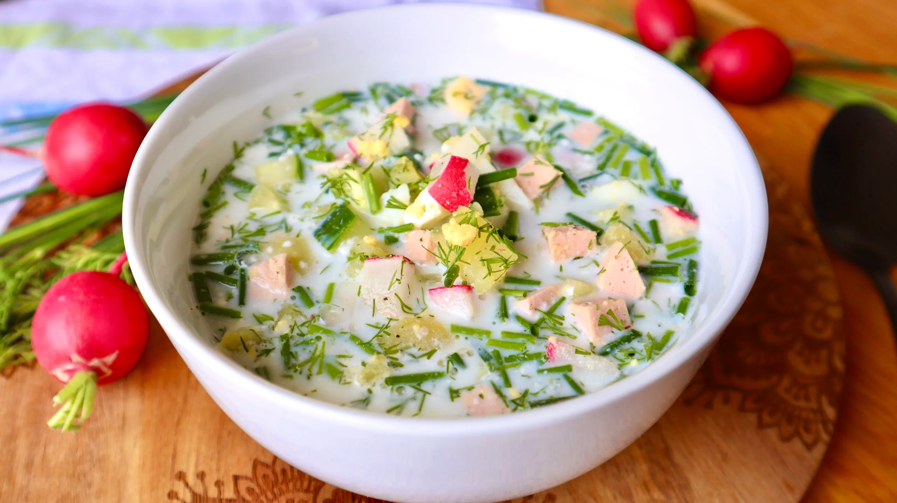

Okroshka Recipe
Ingredients
- 3–4 boiled potatoes
- 3 boiled eggs
- 300 g cooked meat or sausage
- 3–4 fresh cucumbers
- 5–6 radishes
- Green onions to taste
- Fresh dill and parsley to taste
- About 1 liter of kefir, whey, or kvass
- Sour cream for serving
- Salt and pepper to taste
Preparation
- Dice the potatoes, eggs, cucumbers, radishes, and meat/sausage into small cubes.
- Add chopped green onions and fresh herbs.
- Mix everything well in a large bowl.
- Before serving, pour in kefir, whey, or kvass — whichever you prefer.
- Add a spoonful of sour cream and season lightly with salt and pepper.
Tips
- For a lighter version, mix kefir with sparkling mineral water.
- For a classic taste, use kvass.
- Okroshka is versatile, refreshing, and full of flavor. Try it once — and it may become your favorite summer recipe!